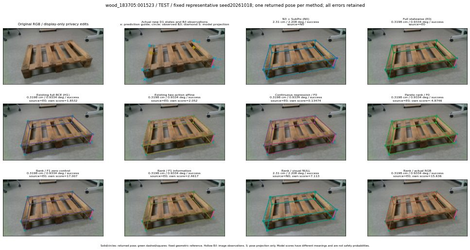

실선은 반환 자세, 초록 점선은 고정 기하 참조입니다. S는 영상 관측이 아닙니다. 점수는 모델별 의미가 다르며 보정된 안전 확률이 아닙니다. 개인정보 처리는 표시 사본에만 적용했습니다.
| 방법·seed | 위치 / 회전 / 공동성공 | 실제 출처 | 선택 후보 | 각 모델 자체 점수 |
|---|---|---|---|---|
| N0 | 2.31 cm / 2.208 deg / success | N0 | N/A | N/A |
| E0 | 0.3198 cm / 0.9334 deg / success | E0 | N/A | N/A |
| E0_REGENERATED | 0.3198 cm / 0.9334 deg / success | E0 | E0_REGENERATED | N/A |
| POSEFIX_SUBPIX_PF_ANCHOR | 1.469 cm / 1.07 deg / success | OTHER | N/A | N/A |
| POSEFIX_SUBPIX_YOLO_ANCHOR | 1.469 cm / 1.07 deg / success | OTHER | N/A | N/A |
| D1_H1_MLP_s20261018 | 0.3198 cm / 0.9334 deg / success | E0 | E0_REGENERATED | 1.853188395500183 |
| D1_H1_MLP_s20261019 | 0.3198 cm / 0.9334 deg / success | E0 | E0_REGENERATED | 1.4939097166061401 |
| D1_H1_MLP_s20261020 | 0.3198 cm / 0.9334 deg / success | E0 | E0_REGENERATED | 2.5276715755462646 |
| D1_H1_PAIR_MLP_s20261018 | 0.3198 cm / 0.9334 deg / success | E0 | E0_REGENERATED | 0.6290868520736694 |
| D1_H1_PAIR_MLP_s20261019 | 0.3198 cm / 0.9334 deg / success | E0 | E0_REGENERATED | 1.8324534893035889 |
| D1_H1_PAIR_MLP_s20261020 | 0.3198 cm / 0.9334 deg / success | E0 | E0_REGENERATED | 2.1003308296203613 |
| D1_H1_PAIR_ROLE_AFFINE_s20261018 | 0.3198 cm / 0.9334 deg / success | E0 | E0_REGENERATED | 2.0519702434539795 |
| D1_H1_PAIR_ROLE_AFFINE_s20261019 | 0.3198 cm / 0.9334 deg / success | E0 | E0_REGENERATED | 2.499708414077759 |
| D1_H1_PAIR_ROLE_AFFINE_s20261020 | 0.3198 cm / 0.9334 deg / success | E0 | E0_REGENERATED | 1.7511029243469238 |
| R_CONT_F0_s20261018 | 0.3198 cm / 0.9334 deg / success | E0 | E0_REGENERATED | 0.1347387284040451 |
| R_CONT_F0_s20261019 | 0.3198 cm / 0.9334 deg / success | E0 | E0_REGENERATED | 0.16985228657722473 |
| R_CONT_F0_s20261020 | 0.3198 cm / 0.9334 deg / success | E0 | E0_REGENERATED | 0.2623712420463562 |
| R_ORDER_F0_s20261018 | 0.3198 cm / 0.9334 deg / success | E0 | E0_REGENERATED | -4.874599933624268 |
| R_ORDER_F0_s20261019 | 0.3198 cm / 0.9334 deg / success | E0 | E0_REGENERATED | 3.8261868953704834 |
| R_ORDER_F0_s20261020 | 0.3198 cm / 0.9334 deg / success | E0 | E0_REGENERATED | 8.377997398376465 |
| R_ORDER_F1_ZERO_s20261018 | 0.3198 cm / 0.9334 deg / success | E0 | E0_REGENERATED | 17.007394790649414 |
| R_ORDER_F1_ZERO_s20261019 | 0.3198 cm / 0.9334 deg / success | E0 | E0_REGENERATED | 26.80372428894043 |
| R_ORDER_F1_ZERO_s20261020 | 0.3198 cm / 0.9334 deg / success | E0 | E0_REGENERATED | 13.095134735107422 |
| R_ORDER_F1_s20261018 | 0.3198 cm / 0.9334 deg / success | E0 | E0_REGENERATED | 2.4617371559143066 |
| R_ORDER_F1_s20261019 | 0.3198 cm / 0.9334 deg / success | E0 | E0_REGENERATED | 8.942774772644043 |
| R_ORDER_F1_s20261020 | 0.3198 cm / 0.9334 deg / success | E0 | E0_REGENERATED | -0.16662387549877167 |
| V_ORDER_NULL_s20261018 | 2.31 cm / 2.208 deg / success | N0 | N0 | 7.113002777099609 |
| V_ORDER_NULL_s20261019 | 0.3198 cm / 0.9334 deg / success | E0 | E0_REGENERATED | 4.397968292236328 |
| V_ORDER_NULL_s20261020 | 0.3198 cm / 0.9334 deg / success | E0 | E0_REGENERATED | -1.0931675434112549 |
| V_ORDER_RGB_s20261018 | 0.3198 cm / 0.9334 deg / success | E0 | E0_REGENERATED | 15.636018753051758 |
| V_ORDER_RGB_s20261019 | 0.3198 cm / 0.9334 deg / success | E0 | E0_REGENERATED | 5.6261467933654785 |
| V_ORDER_RGB_s20261020 | 0.3198 cm / 0.9334 deg / success | E0 | E0_REGENERATED | -12.253946304321289 |